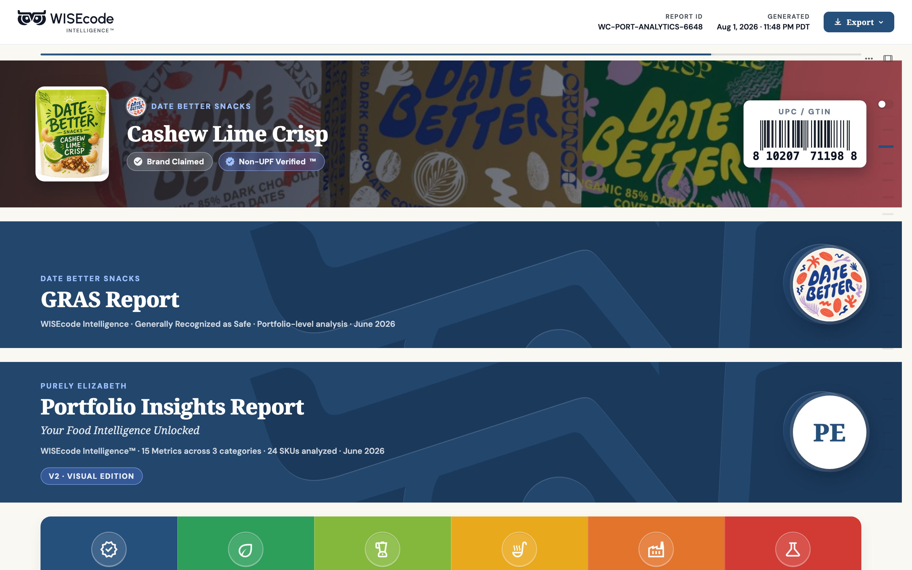
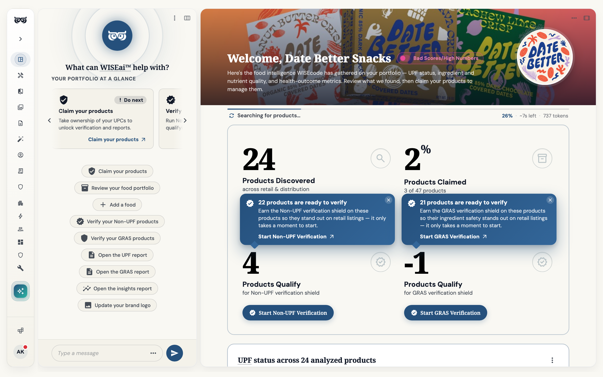

Safety first
When the evidence is unclear, the ingredient is flagged — not waved through. The benefit of the doubt goes to the person eating the food.
GRAS Reviewed is the safety layer beneath the Non-UPF standard. We screen every ingredient in a product for its Generally Recognized as Safe status, surface the supporting evidence, and flag anything that needs a closer look — so nothing ships without a clear safety basis.
GRAS — Generally Recognized as Safe — is the regulatory bar an ingredient meets when qualified experts agree it's safe for its intended use. GRAS Reviewed puts every ingredient in a product against that bar, so a clean label is also a safe one. It's the foundation the Non-UPF Verified™ Shield is built on.

Safety information about food exists, but it's scattered across regulatory notices, supplier documents and dense scientific literature. We picture a world where the safety basis for every ingredient is visible, checkable and current — where a brand can stand behind its label with evidence, and a shopper never has to take "trust us" for an answer.
Safety is not a place to cut corners. These are the commitments the GRAS Reviewed process is held to.
When the evidence is unclear, the ingredient is flagged — not waved through. The benefit of the doubt goes to the person eating the food.
Every determination is tied to a source. We show the basis for a "safe" verdict, so it can be checked rather than simply trusted.
No black boxes. Brands see exactly which ingredients cleared, which were flagged, and precisely what triggered a flag.
The review tracks the frameworks that actually govern food safety, so a GRAS Reviewed result speaks the same language as regulators.
Safety science moves. As determinations change, the review is refreshed — a clean result reflects today's evidence, not last decade's.
A flag comes with a path forward. We tell brands what would resolve it, so review is a route to a safer product, not a dead end.
A GRAS Reviewed verdict is only as strong as its sources. Here's how we gather, check and maintain the evidence behind every ingredient.
Ingredients are matched against the FDA's GRAS notices and affirmed-substance listings — the authoritative record of what has an established safety basis.
Food-additive registries and international safety assessments add context — intended uses, acceptable levels and known restrictions for each substance.
Where a determination hinges on emerging evidence, we go to the published toxicology and nutrition research behind it — not a summary of a summary.
Food scientists resolve the hard cases — novel ingredients, conflicting evidence, unusual uses — and decide what gets flagged, so judgment never falls to an algorithm alone.
GRAS Reviewed produces a clear, measurable safety picture of your portfolio — not a vague reassurance. These are the signals we report.

Run your portfolio through GRAS Reviewed to surface the safety basis for every ingredient, flag what needs attention, and build the foundation for the Non-UPF Verified™ Shield.